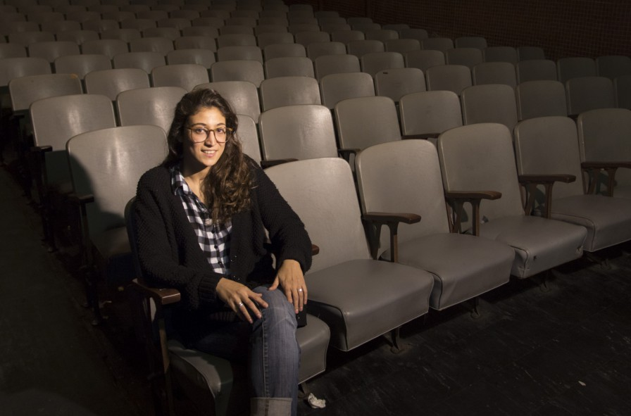

Un poco de nosotros

El 13 de julio de 1967 abrió sus puertas el cine Selectro. La fecha tiene real significancia para el Sindicato de Luz y Fuerza, ya que en esa jornada se conmemora el Día del Trabajador de la Electricidad. Su primera proyección fue el 14 de julio, con el filme español Cuando tú no estás.
Su programación fue el gran atractivo, al reestrenar películas que habían marcado la historia de la pantalla mundial y forman parte del cine de autor. Además logró cautivar a un nuevo público joven, ávido de una producción de alta calidad.
A partir de la década del '90, el Selectro abandonó la actividad cinematográfica completamente. Se inclinó hacia la actividad teatral, la presentación de conferencias y shows de escuelas de danza, y la realización de actos de fin de año.
Durante los dos últimos años recuperó una porción de mercado y se acercó también a un público adulto. La estrategia desarrollada consiste en participar en los procesos creativos, al otorgar su sala no solo para la difusión, sino también para la producción, apoyando a los hacedores locales con el espacio físico, la técnica y la estructura de comunicación.
Afortunadamente, el cartelito de "localidades agotadas" se está colgando cada vez con más frecuencia en la boletería. Y el doble mérito es que ese anuncio no solo responde a producciones que llegan desde Buenos Aires, sino también a apuestas locales que logran trazar una temporada a sala llena.